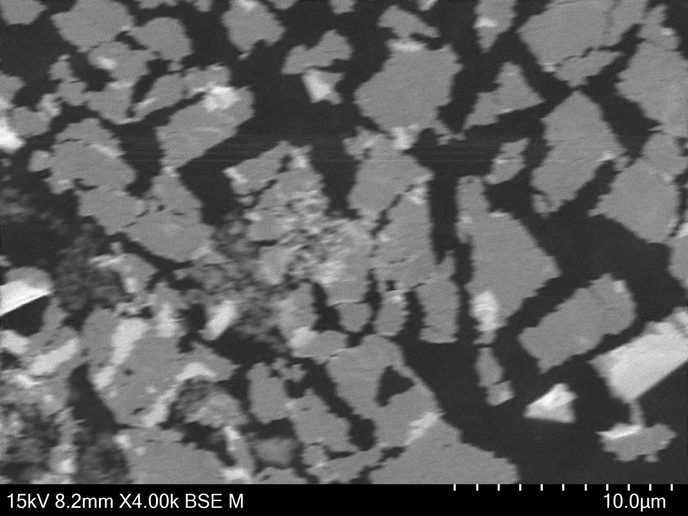
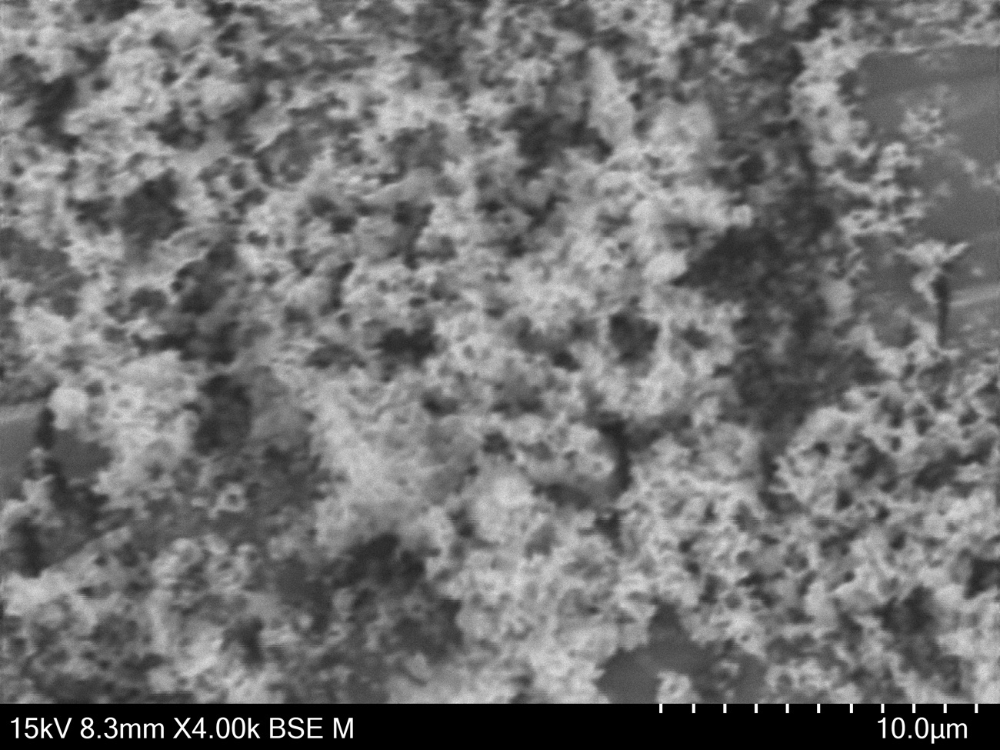
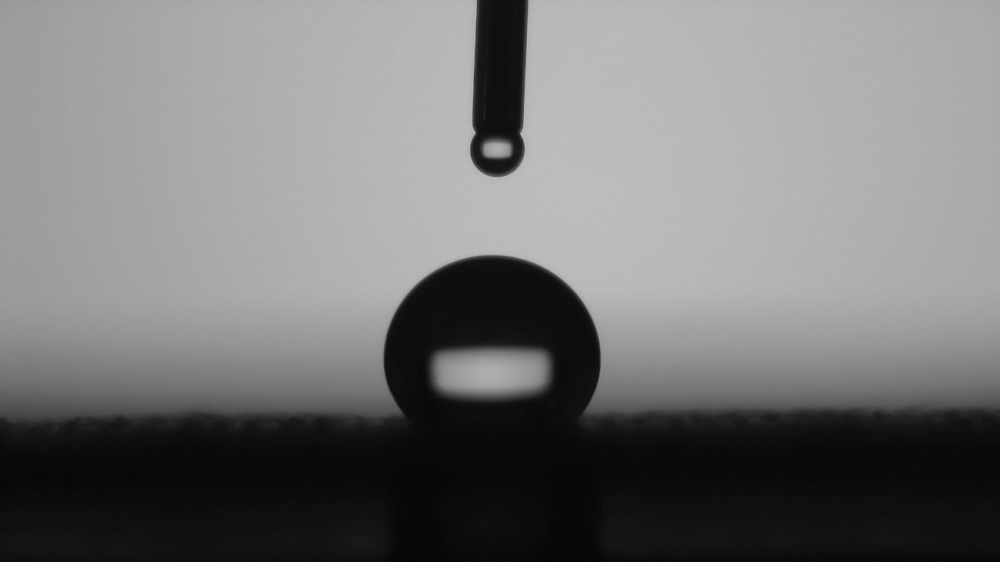

Fluorine free water repellent coatings for outdoor textiles
MSc research at UCL, tested on Finisterre's fabric.
On screen: a drop landing on Finisterre's finished fabric, filmed on the goniometer.
Water repellent outdoor gear has long relied on PFAS.
The finish that makes rain bead off a jacket is almost always PFAS, better known as the "forever chemicals". Nothing else repels both water and oil quite as well, so the outdoor industry used them for years.
The catch is that they barely break down. They build up in the environment and in us, and they are being phased out of textiles. I set out to make a fluorine free finish and test it against a commercial one.
How I make it.
Long carbon chains from stearyl acrylate give a surface water doesn't want to wet. A little silicone keeps the fabric soft, and a crosslinker is meant to help it hold onto the fibre.
Anatase titanium dioxide nanoparticles add fine texture. Bare anatase clumps together, so I treat it with a silane to help it spread more evenly. In the end the particles made little difference to the wetting numbers, and the polymer did most of the work.
I make the polymer as a waterborne emulsion, mix in the particles, and put it on cotton and on Finisterre's fabric by dip, pad and cure. No fluorinated ingredients go into it.



Tested on Finisterre's fabric.
Finisterre is the Cornish outdoor brand, started in 2003 above a surf shop in St Agnes. Their outerwear has used PFAS free water repellents since 2018, so their finish is a commercial benchmark that is already on sale.
They supplied the same fabric twice, once with their finish and once without. I measured both as supplied, then put my coating on the unfinished cloth.

What the testing found.
On cotton, my coating beads water like the commercial finish.
The rounder the drop, the better. That roundness is the contact angle.
New, the commercial finish sheds water better.
The less the fabric has to tilt before the drop runs off, the better. Both on Finisterre's fabric.
After 20 washes the two are level.
Washing cost the commercial finish its lead. Both on Finisterre's fabric.
The usual test did not see it.
The drop on Finisterre's finish stayed as round as ever while the tilt it needed went from 24° to 78°. Contact angle alone would have called it unchanged.
Where the claims come from.
- Why the persistence of PFAS alone justifies treating them as one class. Cousins et al., 2020
- What PFAS exposure is linked to. US EPA
- The EU wide PFAS restriction, textiles included. ECHA
- Fluorinated against fluorine free repellents on outdoor fabrics. Schellenberger et al., 2018
- The trapped air idea that makes a rough surface repel. Cassie and Baxter, 1944